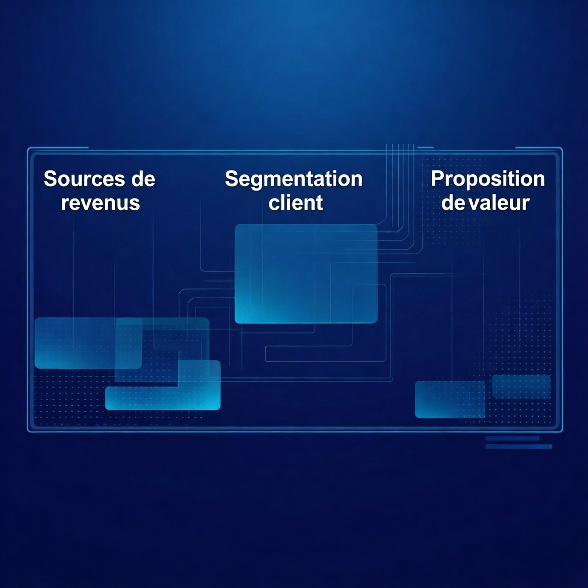
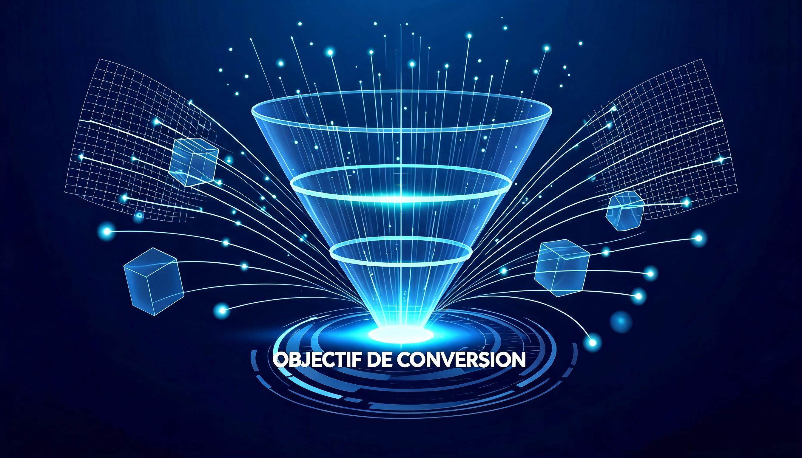

Chapitre 01
Pourquoi l'IA est la plus grande opportunite de notre generation
Le monde change sous nos yeux
L'intelligence artificielle n'est plus un concept de science-fiction reserve aux laboratoires de recherche et aux grandes entreprises technologiques. Elle est desormais entre les mains de chaque entrepreneur, chaque freelance, chaque createur qui souhaite transformer son activite. En 2024, plus de 300 millions de personnes utilisent quotidiennement des outils d'IA generative comme ChatGPT, Claude, Midjourney ou Gemini. Ce chiffre ne cesse de croitre, et avec lui, les opportunites de creer des businesses rentables exploitant cette revolution technologique.
Ce qui rend cette revolution unique, c'est son accessibilite sans precedent. Il n'a jamais ete aussi simple et aussi peu couteux de lancer une entreprise basee sur la technologie. Vous n'avez pas besoin d'etre un ingenieur en informatique, ni d'avoir un capital de depart important. Un simple abonnement a quelques outils d'IA, combine a une strategie solide et a une execution methodique, peut vous permettre de generer vos premiers revenus en quelques semaines seulement.
Pensez-y : il a fallu des decennies pour que l'internet devienne un levier de creation d'entreprise accessible a tous. L'IA, elle, a accompli cette transition en a peine deux ans. Les barrieres a l'entree n'ont jamais ete aussi basses, et les marges beneficiaires n'ont jamais ete aussi elevees pour ceux qui savent exploiter ces outils correctement. C'est exactement ce que cette formation va vous apprendre a faire, etape par etape, de maniere concrete et actionnable.
Les chiffres qui parlent d'eux-memes
Le marche mondial de l'intelligence artificielle est estime a plus de 200 milliards de dollars en 2025, avec une croissance annuelle depassant 35 %. Selon McKinsey, l'IA pourrait ajouter jusqu'a 4,4 trillions de dollars au PIB mondial d'ici 2030. Mais au-dela de ces chiffres macroeconomiques, ce sont les opportunites individuelles qui sont les plus excitantes.
Des entrepreneurs du monde entier genèrent desormais des revenus a six et sept chiffres grace a des businesses construits entierement autour de l'IA. Des agences de creation de contenu, des services d'automatisation pour PME, des plateformes de formation, des outils SaaS : les modeles de business sont nombreux et les profils des createurs sont extremement diversifies. Certains ont commence avec moins de 50 euros d'investissement initial.
En France specifiquement, le marche de l'IA pour les TPE et PME est en pleine explosion. Selon une etude de Bpifrance, plus de 60 % des petites et moyennes entreprises expriment un besoin d'integration de l'IA dans leurs processus, mais moins de 15 % d'entre elles ont les competences internes pour le faire. Ce deficit de competences represente une opportunite massive pour vous : devenir le pont entre la technologie et les entreprises qui en ont besoin.
Ce que cette formation va vous apporter
Cette formation a ete concue pour etre votre guide complet, de la premiere idee a la premiere rentabilite. Contrairement a d'autres ressources qui se contentent de survol des concepts ou de vous presenter des outils sans strategy, nous allons construire ensemble un veritable business plan actionnable.
Vous allez decouvrir comment identifier les outils d'IA les plus puissants et les maitriser rapidement, meme si vous n'avez aucune experience technique prealable. Nous explorerons en detail les differents modeles de business les plus rentables avec l'IA aujourd'hui, en nous appuyant sur des cas reels et des chiffres concrets. Vous apprendrez a creer une offre irresistible, a trouver vos premiers clients, a automatiser vos processus pour scaler, et bien plus encore.
Chaque chapitre se termine par des exercices pratiques et des fiches actionnables que vous pouvez implementer immediatement. Cette formation n'est pas faite pour etre lue passivement : elle est concue pour etre executee. A la fin de ce programme, vous aurez tous les elements pour lancer et faire croitre votre business IA de maniere structuree et rentable.
Le mythe de la complexite technique
L'un des plus grands obstacles psychologiques qui empeche les entrepreneurs de se lancer dans l'IA est la croyance selon laquelle il faudrait etre un expert technique, un developpeur ou un data scientist pour en tirer profit. C'est un mythe dangereux que nous allons demonter immediatement.
La realite est que les outils d'IA d'aujourd'hui sont concus pour etre utilises par des non-techniciens. ChatGPT fonctionne en langage naturel : vous lui parlez comme a un collegue, et il vous repond avec une intelligence et une precision remarquables. Canva IA vous permet de creer des visuels professionnels en quelques clics. Zapier et Make vous permettent de creer des automatisations complexes sans ecrire une seule ligne de code.
Ce qu'il vous faut en revanche, ce sont trois competences qui n'ont rien de technique : la curiosite pour explorer et tester les outils, la strategie pour comprendre comment les combiner de maniere a creer de la valeur, et l'execution pour mettre en oeuvre rapidement et iterer. Ces trois competences s'apprennent et se developpent avec la pratique. Et c'est exactement ce que nous allons faire tout au long de cette formation, en passant de la theorie a l'action a chaque etape du parcours.
Les exemples concrets abondent : des graphistes devenus directeurs artistiques IA, des redacteurs web qui produisent maintenant dix fois plus de contenu, des consultants qui ont automatise 80 % de leur travail repetitif, des commerciaux qui utilisent l'IA pour personnaliser leurs propositions a l'echelle. Tous ces profils partagent une chose commune : ils ont ose commencer et ils ont persévéré.
Votre avantage concurrentiel
Nous sommes encore dans les premieres phases d'adoption massive de l'IA. La plupart des entrepreneurs et des entreprises n'ont pas encore integre ces outils dans leur quotidien professionnel. Cela signifie que ceux qui agissent maintenant disposent d'un avantage concurrentiel considerable.
Pensez aux pionniers de l'e-commerce au debut des annees 2000, ou aux premiers influenceurs sur les reseaux sociaux vers 2010. Ceux qui ont compris le potentiel de ces plateformes avant les autres ont construit des empires. L'IA represente exactement la meme opportunite aujourd'hui, mais a une echelle encore plus grande car elle touche virtuellement tous les secteurs economiques.
En maitrisant l'IA avant vos concurrents, vous pouvez offrir des services plus rapides, moins chers et de meilleure qualite. Vous pouvez automatiser des taches qui prenaient des heures en quelques minutes. Vous pouvez personnaliser votre offre a une echelle impossible sans l'IA. Et surtout, vous pouvez creer des produits et services qui n'existaient tout simplement pas il y a deux ans.
Cette fenetre d'opportunite ne restera pas ouverte indefiniment. Au fur et a mesure que l'IA se democratise, les prix baissent et la concurrence augmente. Mais ceux qui auront construit leur business, leur reputation et leur base de clients pendant cette phase pionniere seront extremement bien positionnes pour dominer leur marche dans les annees a venir. Le moment de commencer, c'est maintenant.
Exercices pratiques du chapitre 01
- Faites la liste de 10 problemes que vous pourriez resoudre avec l'IA dans votre domaine d'expertise.
- Identifiez 3 entreprises ou entrepreneurs qui reussissent deja avec l'IA et analysez leur modele.
- Ecrivez votre objectif de revenu a 6 mois et identifiez quel modele de business pourrait vous y amener.
- Inscrivez-vous a ChatGPT (gratuit) et Claude (gratuit) et passez 1 heure a explorer leurs capacites.
| Indicateur | Valeur |
|---|---|
| Marche mondial IA (2025) | 200+ milliards USD |
| Croissance annuelle | > 35 % |
| Utilisateurs d'IA generative | 300+ millions |
| PME francaises interesseees | > 60 % |
| PME avec competences IA internes | < 15 % |
Le meilleur moment pour lancer un business IA etait il y a un an. Le deuxieme meilleur moment, c'est maintenant. Chaque jour que vous attendez, des concurrents potentiels se lancent et construisent leur avantage.
Chapitre 02
Comprendre l'IA : les fondamentaux pour entrepreneurs
Qu'est-ce que l'intelligence artificielle, vraiment ?
L'intelligence artificielle, dans son sens le plus large, designe la capacite d'une machine a simuler des comportements intelligents. Mais pour un entrepreneur, il est essentiel de comprendre les differentes couches de cette technologie pour savoir laquelle utiliser et dans quel contexte. Nous n'allons pas vous enseigner les mathematiques derriere les reseaux de neurones, mais plutot vous donner une carte mentale claire de l'ecosysteme IA.
On peut diviser l'IA en trois grandes categories. Premierement, l'IA faible ou etroite (narrow AI), qui est concue pour accomplir une tache specifique : generer du texte, reconnaitre des images, traduire des langues, classifier des donnees. C'est celle que nous allons utiliser dans 99 % des cas dans cette formation. Deuxiemement, l'IA generale (AGI), qui serait capable de realiser n'importe quelle tache intellectuelle qu'un humain peut faire : elle n'existe pas encore, malgre les progres rapides. Troisiemement, la superintelligence, qui depasserait l'intelligence humaine dans tous les domaines : c'est un concept theorique qui ne nous concerne pas pour le moment.
En tant qu'entrepreneur, ce qui vous interesse c'est l'IA generative, un sous-ensemble de l'IA faible qui a revolutionne le paysage technologique depuis 2022. L'IA generative est capable de creer du contenu nouveau : textes, images, videos, code, musique, voix. C'est cet aspect creatif qui ouvre des possibilites de business extraordinaires et que nous allons exploiter tout au long de cette formation.
Machine Learning et Deep Learning simplifies
Le Machine Learning (apprentissage automatique) est la methode qui permet a un systeme d'apprendre a partir de donnees plutot que d'etre programme explicitement. Au lieu de dire a l'ordinateur "si X alors fais Y", on lui fournit des milliers ou des millions d'exemples et il decouvre lui-meme les regles et les patterns. Par exemple, pour reconnaitre un chat dans une photo, on n'ecrit pas de regles sur les moustaches ou les oreilles pointues : on montre au modele des millions de photos de chats et il apprend a les identifier.
Le Deep Learning (apprentissage profond) est une sous-branche du Machine Learning qui utilise des reseaux de neurones artificiels inspired du cerveau humain. Ces reseaux sont composes de couches successives de "neurones" qui transforment progressivement les donnees d'entree en resultats. Plus il y a de couches, plus le reseau est "profond", d'ou le terme. Les modeles comme GPT-4, Claude, Midjourney et DALL-E sont tous bases sur des architectures de Deep Learning.
Pour vous, entrepreneur, l'important n'est pas de comprendre les mathematiques du backpropagation ou les architectures Transformer. Ce qui compte, c'est de comprendre les implications pratiques : ces modeles sont entraines sur des quantites massives de donnees, ils peuvent generer du contenu de haute qualite, ils s'ameliorent constamment, et leur cout d'utilisation baisse regulierement. C'est cette combinaison de qualite, d'evolution et d'accessibilite economique qui cree des opportunites de business uniques.
Les grands modeles de langage (LLM) demystifies
Les Large Language Models (LLM) sont au coeur de la revolution actuelle. Ce sont des modeles d'IA entraines sur des milliards de textes (livres, articles, sites web, conversations) qui ont appris a comprendre et generer du langage naturel de maniere fluide et coherente. Les plus connus sont GPT-4 d'OpenAI, Claude d'Anthropic, Gemini de Google et Llama de Meta.
Comprendre comment fonctionnent les LLM vous aidera a mieux les utiliser. Un LLM ne "comprend" pas le langage comme un humain : il predit simplement le mot ou le token le plus probable qui suit une sequence donnee, en se basant sur les milliards de patterns qu'il a appris lors de son entrainement. C'est cette capacite de prediction qui lui permet de generer des textes coherence, de repondre a des questions, de resumer des documents, de traduire, et bien plus encore.
Un concept crucial a comprendre est celui du "prompt", c'est-a-dire l'instruction que vous donnez au modele. La qualite de la reponse depend directement de la qualite de votre prompt. Un prompt vague comme "ecris un article sur le marketing" donnera un resultat generique. Un prompt precis comme "redige un article de 800 mots sur les strategies de marketing digital pour les PME francaises, en incluant 5 statistiques recentes et un plan d'action concret" donnera un resultat infiniment plus utile et actionnable. Maitriser l'art du prompt est l'une des competences les plus precieuses que vous allez developper dans cette formation.
IA generative : au-dela du texte
Si les LLM ont ouvert la voie, l'IA generative s'etend desormais bien au-dela du texte. La generation d'images avec Midjourney, DALL-E 3 ou Stable Diffusion permet de creer des visuels de qualite professionnelle en quelques secondes. La generation de video avec Sora, Runway ou Pika ouvre des possibilites inedites pour le contenu video. La generation de musique avec Suno ou Udio revolutionne la creation audio.
Pour votre business, cela signifie que vous pouvez offrir une gamme de services beaucoup plus large qu'auparavant, et ce sans necessairement maitriser les competences techniques traditionnelles. Un designer graphique peut utiliser Midjourney pour generer des concepts en quelques minutes plutot qu'en quelques heures. Un realisateur peut creer des storyboards avec DALL-E. Un musicien peut composer des bandes originales avec Suno.
Les implications economiques sont enormes : ce qui prenait des jours ou des semaines peut desormais etre fait en heures. Ce qui necessitait une equipe de specialistes peut etre accompli par une seule personne bien equipee en outils d'IA. Cela reduit considerablement les couts de production, augmente les marges beneficiaires et permet de servir plus de clients en moins de temps. C'est l'essence meme de la creation d'un business rentable avec l'IA.
L'IA ethique et les limites a connaitre
Toute puissance technologique s'accompagne de responsabilites. En tant qu'entrepreneur utilisant l'IA, il est essentiel de comprendre les limites et les considerations ethiques associees. Les modeles d'IA peuvent produire des informations incorrectes (hallucinations), reproduire des biais presents dans leurs donnees d'entrainement, et soulever des questions de propriete intellectuelle.
Les hallucinations sont probablement le piege le plus dangereux. Un LLM peut generer un texte parfaitement structure et convaincant, mais qui contient des faits totalement inventes. Il peut citer des etudes qui n'existent pas, inventer des statistiques, ou attribuer de fausses citations a des personnes reelles. C'est pourquoi il est imperatif de toujours verifier les informations generees par l'IA, surtout lorsqu'elles sont destinees a etre publiees ou utilisees dans un contexte professionnel.
La propriete intellectuelle est un autre domaine sensible. Les questions de droits d'auteur sur les images generees par IA, la reutilisation de contenu produit par des tiers via des outils d'IA, et les conditions d'utilisation des differents services sont des aspects juridiques a maitriser. Nous vous recommandons de toujours consulter les conditions d'utilisation de chaque outil et de rester informe de l'evolution du cadre juridique, qui est encore en pleine construction dans la plupart des pays.
Exercices pratiques du chapitre 02
- Experimentez avec 5 types de prompts differents (creation, analyse, traduction, resumé, code) et notez les resultats.
- Utilisez ChatGPT pour generer un plan d'action personnalise base sur votre niche et vos competences.
- Testez la difference entre un prompt vague et un prompt detaille sur le meme sujet. Mesurez l'ecart de qualite.
Chapitre 03
Les outils IA indispensables : guide complet
ChatGPT et Claude : vos assistants strategiques
ChatGPT (d'OpenAI) et Claude (d'Anthropic) sont les deux outils les plus polyvalents et les plus puissants pour un entrepreneur. Ils fonctionnent comme des assistants intelligents capables de rediger du contenu marketing, d'analyser des donnees, de creer des plans strategiques, de repondre a des emails complexes, et bien plus encore. La maitrise de ces deux outils est absolument fondamentale pour votre business IA.
ChatGPT, dans sa version GPT-4o, excelle dans la generation de contenu long, l'analyse de donnees structurees, la creation de code, et l'integration avec d'autres outils via ses plugins et son API. Il dispose egalement d'une fonctionnalite de vision qui lui permet d'analyser des images, et d'une fonctionnalite audio pour les interactions vocales. Son ecosysteme d'applications tierces (via le GPT Store) est extremement riche et ne cesse de croitre.
Claude, dans sa version Claude 3.5 Sonnet, se distingue par sa capacite a traiter des documents tres longs (jusqu'a 200 000 tokens), ce qui le rend ideal pour analyser des rapports, des contrats, ou des corpus de documents importants. Il est generalement considere comme superieur a ChatGPT pour les taches necessitant de la nuance, de la rigueur et un raisonnement approfondi. Sa capacite a suivre des instructions complexes et a maintenir une coherence sur de longues conversations est remarquable.
Le conseil pratique est de maitriser les deux et de les utiliser en fonction de leurs forces respectives. Utilisez ChatGPT pour la creation de contenu varié et l'integration avec des outils tiers. Utilisez Claude pour l'analyse approfondie, la redaction de documents complexes, et tout ce qui necessite rigueur et precision. Cette combinaison vous donnera une puissance de travail decuplee par rapport a un entrepreneur qui n'utilise qu'un seul outil.
Midjourney et DALL-E : la creation visuelle democratisee
La creation visuelle est l'un des domaines ou l'IA a le plus d'impact sur le monde des affaires. Midjourney et DALL-E 3 sont les deux leaders du marche, chacun avec ses specificites et ses avantages. Pour votre business, maitriser au moins l'un de ces outils est un atout considerable qui vous permettra d'offrir des services de creation graphique a forte valeur ajoutee.
Midjourney est reconnu pour la qualite artistique exceptionnelle de ses generations. Il excelle dans la creation d'illustrations, de concepts artistiques, de photographies de synthese et de visuels esthetiquement superieurs. Son fonctionnement via Discord le rend accessible et sa communaute active fournit une source constante d'inspiration et d'apprentissage. Les versions recentes (v6 et au-dela) permettent un controle considerable sur le style, la composition et les details des images generees.
DALL-E 3, integre nativement dans ChatGPT, offre l'avantage de la simplicite d'utilisation et de la comprehension naturelle du langage. Vous pouvez decrire l'image que vous souhaitez en langage courant et il la genere avec une fidelite remarquable a votre description. Cette integration avec ChatGPT permet egalement de generer des images directement dans le contexte d'une conversation, ce qui est extremement pratique pour iterer rapidement sur un concept visuel.
Pour votre business, ces outils vous permettent de creer des logos, des visuels pour les reseaux sociaux, des illustrations d'articles, des maquettes de sites web, des concepts produits, et bien plus encore. Le cout de generation est derisoire compare a l'embauche d'un designer, et la vitesse de production vous permet de servir plus de clients en moins de temps. C'est un avantage concurrentiel majeur.
Les outils d'automatisation : Zapier, Make et au-dela
L'automatisation est le moteur qui transforme un petit business en une machine a generer des revenus. Zapier et Make (anciennement Integromat) sont les deux plateformes d'automatisation les plus populaires et les plus accessibles. Elles vous permettent de connecter differents outils entre eux et de creer des workflows automatises sans ecrire une seule ligne de code.
Zapier est le plus simple a prendre en main. Son interface visuelle vous permet de creer des "Zaps" qui enchainent automatiquement des actions entre differentes applications. Par exemple : lorsqu'un nouveau lead remplit un formulaire sur votre site web, Zapier peut automatiquement l'ajouter a votre CRM, envoyer un email de bienvenue personnalise, notifier votre equipe sur Slack, et creer une tache dans votre outil de gestion de projet. Tout cela se declenche automatiquement, sans votre intervention.
Make (anciennement Integromat) offre plus de flexibilite et de puissance pour les workflows complexes. Sa visualisation en carte mentale des workflows permet de gerer des processus multi-etapes avec des conditions, des boucles et des transformations de donnees avancees. Si Zapier est l'outil ideal pour les automatisations simples et rapides, Make est le choix prefere pour les processus plus sophistiques necessitant de la logique conditionnelle et de la manipulation de donnees.
D'autres outils d'automatisation meritent egalement votre attention : n8n pour une solution open source auto-hebergee, Airtable combine avec ses automatisations natives pour la gestion de donnees, et les API des differents services d'IA pour des integrations sur mesure. L'objectif est d'automatiser au maximum les taches repetitives pour vous concentrer sur ce qui a vraiment de la valeur : la strategie, la creation de relation client et l'innovation.
Canva IA, Gamma et les outils de creation de contenu
Canva a integra l'IA dans presque toutes ses fonctionnalités, ce qui en fait un outil extremement puissant pour les entrepreneurs. Magic Design genere des mises en page a partir de descriptions textuelles, Magic Write cree et ameliore du contenu directement dans vos designs, Magic Eraser supprime des elements indesirables de vos photos, et Magic Expand elargit vos images au-dela de leurs frontieres originales. L'ensemble de ces fonctionnalites IA vous permet de creer des visuels professionnels en une fraction du temps necessaire auparavant.
Gamma est un outil specialise dans la creation de presentations pousseees par l'IA. Vous lui decrivez le sujet de votre presentation et il genere une structure complete avec des slides, du contenu, des visuels et des mises en page professionnelles. C'est particulierement utile pour creer rapidement des presentations commerciales, des supports de formation ou des pitchs pour des investisseurs. Le gain de temps est considerable : ce qui prenait 4 a 8 heures peut desormais etre fait en 15 a 30 minutes.
Notion IA integre des fonctionnalites d'intelligence artificielle directement dans votre espace de travail. Il peut resumer des notes, generer du contenu, extraire des informations cles de documents, et meme repondre a des questions basees sur votre base de connaissances interne. Pour un entrepreneur qui utilise Notion comme outil de gestion de projet et de documentation, cette integration est particulierement precieuse car elle centralise l'IA dans votre flux de travail quotidien.
Des outils specialises meritent egalement l'attention : Descript pour le montage video automatise (transcription, suppression des silences, sous-titres), Otter pour la transcription de reunions, Grammarly pour la correction et l'amelioration de vos textes en anglais, et Hemingway pour ameliorer la lisibilite de vos contenus. Chacun de ces outils repond a un besoin specifique et contribue a augmenter votre productivite globale.
Choisir sa stack IA : le bon outil pour la bonne tache
Avec la proliferation des outils d'IA, il est facile de se sentir submerge. La cle est de ne pas essayer de tout maitriser, mais de construire une "stack" d'outils coherente et adaptee a votre business. Une bonne stack IA est comme une equipe bien organisee : chaque outil a un role specifique et ils se completent mutuellement.
La premiere etape est d'identifier vos besoins principaux en fonction de votre modele de business. Si vous etes dans la creation de contenu, votre stack sera centree sur ChatGPT, Claude, Midjourney et Canva IA. Si vous etes dans l'automatisation, elle sera centree sur Make, les API d'IA et des outils de CRM. Si vous etes dans le consulting, elle sera centree sur Claude pour l'analyse, Notion IA pour l'organisation, et des outils de presentation.
La deuxieme etape est de maitriser en profondeur quelques outils plutot que de survoler beaucoup d'outils. Il vaut mieux etre expert sur 5 outils que debutant sur 50. La profondeur de maitrise se traduit directement par la qualite de votre production et donc par la valeur percue par vos clients. Un prompt bien structure sur un outil que vous maitrisez vaut mieux que dix prompts approximatifs sur des outils que vous decouvrez.
La troisieme etape est de rester informe des evolutions. Le paysage de l'IA evolue a une vitesse vertigineuse. De nouveaux outils apparaissent chaque semaine, les modeles existants s'ameliorent constamment, et les prix baissent regulierement. Dediquez au moins une heure par semaine a l'exploration de nouveaux outils et a la mise a jour de vos connaissances. C'est un investissement qui rapporte enormement sur le long terme.
Exercices pratiques du chapitre 03
- Creez un compte gratuit sur chacun des outils mentionnes et produisez un echantillon de travail avec chacun.
- Construisez votre stack IA personnelle en remplissant le tableau : outil, cout mensuel, utilite principale, frequence d'utilisation.
- Automatisez une tache repetitive de votre quotidien en utilisant Zapier ou Make. Documentez le temps gagne.
| Outil | Cout/mois | Meilleur pour |
|---|---|---|
| ChatGPT Plus | 20 USD | Creation de contenu, code, analyse |
| Claude Pro | 20 USD | Documents longs, rigueur, nuance |
| Midjourney | 30 USD | Illustrations artistiques premium |
| Canva Pro | 13 USD | Design, visuels, presentations |
| Make | 9-16 USD | Workflows d'automatisation avances |
| Zapier | 20 USD | Automatisations simples et rapides |
| Notion IA | 10 USD | Gestion de projets et documentation |
Ne tombez pas dans le piege de la 'tool fatigue'. Maitrisez 5 outils a fond plutot que 50 outils a moitie. La profondeur de maitrise se traduit directement par la qualite de votre production et la valeur percue par vos clients.
Chapitre 04
Identifier votre niche rentable avec l'IA

L'importance cruciale du choix de niche
Le choix de votre niche est probablement la decision strategique la plus importante que vous prendrez dans la creation de votre business IA. C'est ce choix qui determinera la facilite avec laquelle vous trouverez vos premiers clients, les prix que vous pourrez pratiquer, la concurrence a laquelle vous ferez face, et votre potentiel de croissance a long terme. Une mauvaise niche peut vous faire perdre des mois, voire des annees. Une bonne niche peut vous amener la rentabilite en quelques semaines.
Le principe fondamental est de trouver l'intersection entre trois elements : vos competences et passions, les besoins du marche, et les possibilites offertes par l'IA. Trop d'entrepreneurs commencent par les outils et essaient ensuite de trouver un probleme a resoudre. L'approche inverse est beaucoup plus efficace : commencez par identifier un probleme reel et urgent que des gens ou des entreprises sont prets a payer pour resoudre, puis utilisez l'IA comme levier pour proposer une solution plus rapide, moins chere ou de meilleure qualite que les alternatives existantes.
La niche ideale pour un business IA presente plusieurs caracteristiques : le probleme est suffisamment douloureux pour que les clients soient motives a trouver une solution, le marche est assez grand pour generer un chiffre d'affaires significatif, les clients ont la capacite et la volonte de payer pour la solution, et l'IA vous donne un avantage competitif mesurable par rapport aux approches traditionnelles. Nous allons voir comment identifier et evaluer methodiquement ces criteres.
Les secteurs les plus prometteurs en 2025
Certains secteurs sont particulierement receptifs a l'integration de l'IA et representent des opportunites de business exceptionnelles. Le secteur du marketing digital est en tete, avec une demande massive pour la creation de contenu, le SEO, les publicites et les campagnes email. Les entreprises de toutes tailles ont besoin de contenu en permanence et l'IA permet de produire plus, plus vite et mieux.
Le secteur de l'e-commerce beneficie egalement enormement de l'IA. La generation de descriptions produits, la creation de visuels publicitaires, l'optimisation des fiches produits pour le SEO, le service client automatise et la personnalisation de l'experience client sont autant de domaines ou l'IA cree de la valeur mesurable. Un e-commercien qui utilise l'IA pour optimiser ses fiches produits peut voir ses ventes augmenter de 20 a 40 %, ce qui justifie largement l'investissement dans vos services.
L'immobilier est un autre secteur prometteur. La creation de visuels de mise en valeur (home staging virtuel), la redaction d'annonces immobilières optimisees, l'analyse de marche et la qualification de leads sont des taches que l'IA peut considerablement ameliorer. Les agents immobiliers sont souvent debordes et recherchent activement des solutions pour gagner du temps et se differencier.
La formation et l'education representent un marche en pleine croissance. La creation de programmes de formation, de supports pedagogiques, de quiz et d'evaluations est grandement facilitee par l'IA. Les entreprises investissent massivement dans la formation de leurs equipes et les formateurs independants qui utilisent l'IA pour creer du contenu de qualite ont un avantage competitif considerable.
D'autres secteurs a explorer incluent la restauration (creation de menus, marketing local), la sante et le bien-etre (contenu informatif, gestion de rendez-vous), le juridique (analyse de contrats, recherche documentaire) et la finance (analyse de donnees, creation de rapports).
La methode en 5 etapes pour trouver votre niche
La premiere etape est l'audit de vos competences. Faites une liste exhaustive de tout ce que vous savez faire, de vos experiences professionnelles, de vos passions et de vos centres d'interet. N'oubliez pas les competences transversales comme l'organisation, la communication, la gestion de projet ou l'enseignement. Chaque competence peut etre combinee avec l'IA pour creer une offre unique.
La deuxieme etape est la recherche de problemes. Parlez a des entrepreneurs, consultez des forums et des groupes Facebook, analysez les questions frequentes dans votre domaine d'expertise, et identifiez les "points de douleur" recurrents. Qu'est-ce qui fait perdre du temps aux gens ? Qu'est-ce qui les frustre ? Qu'est-ce qu'ils essaient de faire mais n'arrivent pas a faire seuls ? Chaque probleme identifie est une opportunite de business potentielle.
La troisieme etape est l'evaluation de la demande. Utilisez des outils comme Google Trends, AnswerThePublic, Ubersuggest ou les suggerions de recherche Google pour mesurer l'interet pour votre niche. Un volume de recherche eleve sur des mots-cles lies a votre niche est un bon indicateur de demande. Consultez egalement les plateformes freelance comme Fiverr et Upwork pour voir si des gens payent deja pour des services similaires.
La quatrieme etape est l'analyse de la competition. Etudiez ce qui existe deja dans votre niche. Qui sont les acteurs actuels ? Quels sont leurs prix ? Quels sont leurs points forts et leurs faiblesses ? L'absence totale de concurrence peut signifier soit une opportunite, soit l'absence de demande. Une concurrence moderee avec des offres de qualite mediocre est souvent la meilleure situation pour un nouvel entrant avec une offre amelioree grace a l'IA.
La cinquieme etape est le test de validite. Avant d'investir des semaines dans la creation de votre offre, validez votre idee aupres de prospects reels. Creez une landing page simple, contactez directement des entreprises cibles, ou proposez vos services a prix reduit a quelques premiers clients. Le feedback reel du marche vaut infiniment plus que toutes les theories du monde.
Analyser la rentabilite potentielle de votre niche
Toutes les niches ne se valent pas en termes de rentabilite. Pour evaluer le potentiel financier de votre niche, vous devez analyser plusieurs parametres cles. Le premier est le prix moyen que les clients sont prets a payer. Dans les services bases sur l'IA, les prix varient considerablement selon la niche et le niveau de specialisation. Les services B2B generalement commandent des prix plus eleves que les services B2C car la valeur creee pour l'entreprise est plus directement mesurable.
Le deuxieme parametre est le volume potentiel de clients. Une niche avec un prix eleve mais tres peu de clients peut etre aussi rentable qu'une niche avec un prix bas mais un grand nombre de clients. Le chiffre d'affaires potentiel se calcule en multipliant le prix moyen par le nombre de clients que vous pouvez raisonnablement servir par mois. Par exemple, 10 clients a 2 000 euros par mois generent 20 000 euros de revenus mensuels.
Le troisieme parametre est le cout de revient. L'un des grands avantages des businesses bases sur l'IA est que les couts de production sont extremement bas. Un abonnement ChatGPT Plus a 20 dollars par mois, un abonnement Midjourney a 30 dollars, et quelques abonnements a des outils d'automatisation totalisent generalement moins de 200 euros par mois. Cela signifie que vos marges beneficiaires peuvent depasser 90 %, ce qui est exceptionnel dans presque tout autre secteur d'activite.
Le quatrieme parametre est le potentiel de recurrence. Les revenus recurrents (abonnements, contrats mensuels) sont beaucoup plus precieux que les revenus ponctuels car ils permettent de predire et stabiliser vos revenus. Cherchez des niche ou vous pouvez mettre en place un modele d'abonnement ou un contrat de service recurrent. Par exemple, la gestion des reseaux sociaux, la creation de contenu mensuel, ou le support marketing continu sont des services qui se pretent naturellement a la recurrence.
Exercices pratiques du chapitre 04
- Completez l'audit de competences : listez tout ce que vous savez faire et identifiez les intersections avec l'IA.
- Utilisez Google Trends et AnswerThePublic pour analyser 3 niches potentielles. Notez vos conclusions.
- Contactez 5 personnes dans votre reseau pour discuter de leurs problemes et identifier des opportunites.
Chapitre 05
Les modeles de business rentables avec l'IA
Le modele Agence IA : le plus rapide a lancer
Le modele d'agence IA est probablement le moyen le plus rapide et le plus accessible de commencer a generer des revenus avec l'IA. Le principe est simple : vous utilisez les outils d'IA pour offrir des services a forte valeur ajoutee a des clients qui n'ont ni le temps ni les competences pour utiliser ces outils eux-memes. Vous agissez comme un intermediaire entre la technologie et les besoins des entreprises.
Les types d'agences IA les plus courantes et les plus rentables incluent : les agences de contenu (creation d'articles, de posts sociaux, de newsletters), les agences de design (logos, visuels, maquettes), les agences SEO (optimisation de contenu, recherche de mots-cles), les agences de publicite (creations ad, copywriting), et les agences d'automatisation (mise en place de workflows, chatbots). Chacune de ces specialites peut etre lancee avec un investissement initial minimal.
Le pricing d'une agence IA se fait generalement sous forme de forfaits mensuels. Un forfait de creation de contenu pour les reseaux sociaux peut se situer entre 500 et 3 000 euros par mois selon le volume et la qualite. Un forfait d'automatisation complete peut aller de 1 500 a 10 000 euros selon la complexite. L'element cle pour justifier ces tarifs est de demontrer le retour sur investissement (ROI) que vos services apportent au client. Si vos services generent 5 000 euros de ventes supplementaires pour un client qui paie 1 000 euros, le ROI est evident et le client renouvelle naturellement.
Le secret pour reussir avec une agence IA est de se specialiser plutot que de tout faire. Une agence "IA pour les restaurants" ou "IA pour les agents immobiliers" aura beaucoup plus de facilite a trouver des clients et a justifier ses tarifs qu'une agence generaliste. La specialisation vous permet de developper une expertise approfondie, de creer des processus standardises et efficients, et de construire une reputation dans un domaine specifique.
Le modele Produit IA (SaaS et outils)
Le modele de produit IA consiste a creer un outil ou une application basee sur l'IA que vous vendez a vos clients. Cela peut aller d'un simple wrapper autour d'une API d'IA existante (en ajoutant une interface utilisateur specifique et des fonctionnalites ciblees) jusqu'a un produit complet avec ses propres modeles entraines. Ce modele offre l'avantage d'une plus grande scalabilite car le meme produit peut etre vendu a un nombre illimite de clients sans augmentation proportionnelle du travail.
Les types de produits IA les plus accessibles pour un entrepreneur individuel incluent : les outils de generation de contenu specialises (par exemple, un outil qui genere des descriptions produits pour e-commerciers), les chatbots personnalises pour des secteurs specifiques, les outils d'analyse et de reporting automatise, les extensions de navigateur qui ajoutent des fonctionnalites IA a des plateformes existantes, et les templates ou systemes de prompts organises pour des cas d'usage specifiques.
Le lancement d'un produit IA peut se faire avec un investissement relativement modeste si vous utilisez les API existantes plutot que de developper vos propres modeles. Un produit MVP (Minimum Viable Product) peut etre construit en quelques semaines en utilisant l'API de ChatGPT ou Claude, un framework web comme Next.js, et une base de donnees simple. Le cout de l'API par utilisateur etant generalement faible (quelques centimes par utilisation), vos marges peuvent etre tres elevees.
Le defi principal du modele produit est l'acquisition de clients a grande echelle et la diferenciation par rapport a la concurrence. Pour reussir, votre produit doit resoudre un probleme suffisamment specifique et douloureux que les clients soient prets a payer pour l'utiliser. La niche est encore plus importante ici que pour une agence : votre produit doit etre le meilleur dans son domaine specifique plutot que d'essayer d'etre correct dans de nombreux domaines.
Le modele Formation et Consulting IA
Le marche de la formation IA est en pleine explosion. Des millions de professionnels et d'entreprises cherchent a comprendre et a utiliser l'IA, mais manquent de competences et de temps pour se former seuls. En tant qu'expert IA (ce que vous deviendrez grace a cette formation), vous etes parfaitement positionne pour combler ce besoin et generer des revenus substantiels.
Les formats de formation les plus rentables incluent : les formations en ligne pre-enregistrees (e-learning), les cohortes de formation en direct (coaching de groupe), les ateliers pratiques en entreprise (formation B2B), les consultations individuelles, et les audits IA (analyse de l'utilisation potentielle de l'IA dans une entreprise). Chacun de ces formats a ses avantages en termes de revenus, de scalabilite et d'impact.
Une formation en ligne bien concue peut se vendre entre 97 et 997 euros, voire plus pour des programmes premium. Le cout de production est essentiellement votre temps, et une fois la formation creee, elle peut etre vendue indefiniment sans cout supplementaire. C'est le modele qui offre les marges les plus elevees de tous les business IA. Si votre formation se vend a 497 euros et que vous en vendez 10 par mois, cela genere 4 970 euros de revenus mensuels avec un cout marginal quasi nul.
Le consulting IA aupres des entreprises est egalement tres lucratif. Les entreprises paient generalement entre 500 et 2 000 euros par jour pour un consultant IA, et les missions d'accompagnement peuvent s'etendre sur plusieurs semaines ou mois. Pour vous positionner comme consultant, il est essentiel de demontrer une expertise concrete : cas d'utilisation reussis, temoignages clients, resultats mesurables. Votre portfolio de projets realises sera votre meilleur argument de vente.
Le modele d'Automatisation de Services
Le modele d'automatisation de services consiste a identifier des services existants dans un secteur donne et a les proposer a une fraction du prix et en une fraction du temps grace a l'automatisation par IA. C'est un modele particulierement puissant car il vous permet de "demonetiser" des services traditionnellement chers et d'acceder a un marche beaucoup plus large.
Par exemple, le service de redaction SEO traditionnel coute generalement entre 100 et 300 euros par article avec un delai de 3 a 7 jours. En utilisant l'IA, vous pouvez offrir des articles de qualite equivalente ou superieure pour 30 a 80 euros avec un delai de 24 heures. Vous servez des clients qui n'avaient pas le budget pour les services traditionnels tout en generant une marge beneficiaire importante grace a la faible cout de production.
Les services les plus adaptes a ce modele sont ceux qui impliquent beaucoup de travail repetitif ou de creation de contenu : redaction, traduction, creation graphique, montage video, transcription, synthese de donnees, analyse de marche, veille concurrentielle. Pour chacun de ces services, l'IA peut automatiser 70 a 90 % du travail, vous laissant le role de superviseur et d'editeur pour garantir la qualite finale.
La cle du succes dans ce modele est la standardisation. Plus vous standardisez vos processus, plus vous etes efficient et plus vos marges augmentent. Creez des templates de prompts, des workflows d'automatisation, des checklists de qualite, et des procedures operationnelles standardisees. Ce systeme documente devient lui-meme un actif precieux de votre business qui facilite le recrutement et la formation de collaborateurs si vous decidez de scaler.
Le modele IA as a Service : location et abonnements
Le modele IA as a Service (IAaaS) est une variante sophistiquee du modele d'abonnement ou vous ne vendez pas seulement un outil, mais un service complet base sur l'IA qui apporte un resultat specifique au client. Par exemple, au lieu de vendre un outil de generation de contenu, vous vendez un service de gestion complete des reseaux sociaux propulse par l'IA qui inclut la strategie, la creation, la planification et l'analyse des performances.
Ce modele est particulierement attractif pour plusieurs raisons. Premierement, il genere des revenus recurrents previsibles, ce qui facilite la gestion financiere et la planification de la croissance. Deuxiemement, il augmente considerablement la valeur percue par le client car il ne s'agit plus simplement d'un outil mais d'un partenaire qui s'occupe de tout. Troisiemement, il cree une dependance naturelle qui reduit le taux de desabonnement.
Les prix dans ce modele se situent generalement entre 297 et 2 997 euros par mois selon la complexite et la valeur du service. Un service de content marketing IA pour une PME peut se vendre a 997 euros par mois en incluant 20 articles de blog, 60 posts pour les reseaux sociaux, 4 newsletters et un rapport mensuel d'analyse. Le cout de production grace a l'IA est inferieur a 100 euros, laissant une marge brute superieure a 90 %.
Pour mettre en place ce modele avec succes, il est essentiel d'avoir des processus extremement bien rodés et des outils d'automatisation qui fonctionnent de maniere fiable. Chaque minute que vous passez manuellement sur un processus est une minute qui ne peut pas etre dediee a l'acquisition de nouveaux clients. L'objectif est de construire un systeme qui fonctionne presque autonome, ou votre role principal est de superviser la qualite et de gerer la relation client.
Exercices pratiques du chapitre 05
- Choisissez un modele de business et redigez une offre complete en suivant le schema du chapitre.
- Calculez votre prix plancher et votre prix base sur la valeur pour votre premiere offre.
- Identifiez 3 concurrents dans votre niche et analysez leurs offres, tarifs et points faibles.
| Modele | Investissement initial | Potentiel mensuel | Temps de lancement |
|---|---|---|---|
| Agence IA | 50-200 EUR | 3 000-30 000 EUR | 1-2 semaines |
| Produit SaaS IA | 500-5 000 EUR | 1 000-50 000 EUR | 1-3 mois |
| Formation IA | 0-200 EUR | 2 000-20 000 EUR | 2-6 semaines |
| Consulting IA | 0-100 EUR | 5 000-25 000 EUR | 1-2 semaines |
| IA as a Service | 200-1 000 EUR | 3 000-30 000 EUR | 2-4 semaines |
Le modele le plus rentable est celui qui combine revenus recurrents (abonnements) avec une forte automatisation. Visez une marge brute superieure a 80 % et un taux de retention superieur a 85 %.
Chapitre 06
Creer votre offre : positionnement et tarification
L'architecture d'une offre irresistible
Une offre irresistible est celle que votre client ideal a du mal a refuser. Elle repond precisement a son probleme, elle demontre clairement la valeur qu'il va recevoir, elle elimine ses objections principales, et elle presente un rapport qualite-prix evident. Construire une telle offre n'est pas une question de chance mais de methode, et c'est exactement ce que nous allons decortiquer ensemble.
La premiere composante d'une offre irresistible est la promesse transformateur. Vos clients ne paient pas pour un outil ou un service : ils paient pour un resultat. Un redacteur ne vend pas des articles, il vend du trafic qualifie. Un consultant IA ne vend pas des heures de conseil, il vend une augmentation de productivite mesurable. Formulez votre offre en termes de resultat final, pas en termes de livrable intermediaire. Cette distinction est cruciale pour la perception de valeur.
La deuxieme composante est la reduction du risque pour le client. Plus vous reduisez le risque percu par le client, plus il est facile pour lui de dire oui. Offrez une garantie de satisfaction, des resultats demonstrables, un essai gratuit, ou un paiement conditionnel aux resultats. Ces mecanismes de reduction du risque sont d'autant plus puissants que la plupart de vos concurrents ne les proposent pas, ce qui vous differencie immediatement.
La troisieme composante est l'exclusivite et l'urgence. Une offre disponible en permanence a tendance a etre remise a plus tard par les prospects. En ajoutant des elements d'exclusivite (places limitees, acces a vie, bonus exclusifs) et d'urgence (prix promotionnel temporaire, date de fermeture des inscriptions), vous creez une incitation a agir maintenant plutot que demain. Ces mecanismes doivent etre utilises de maniere ethique et sincere pour etre efficaces sur le long terme.
La tarification strategique : ne sous-estimez jamais votre valeur
L'une des erreurs les plus frequentes des debutants dans le business IA est de pratiquer des prix trop bas. La logique est souvent de se dire qu'en etant moins cher, on attirera plus de clients. En realite, des prix trop bas envoient un signal negatif sur la qualite de votre service et attirent les clients les plus exigeants et les moins rentables. La strategie de prix est un levier strategique qu'il faut maitriser.
Commencez par calculer votre prix plancher, c'est-a-dire le prix minimum en dessous duquel vous ne degagez pas de profit. Ce prix doit prendre en compte votre temps, vos couts d'outils, vos charges fixes et une marge beneficiaire raisonnable. Pour un service base sur l'IA, vos couts sont generalement faibles (abonnements a quelques outils), donc votre prix plancher est essentiellement determine par la valeur de votre temps.
Ensuite, evaluez la valeur que vous creez pour le client. Si votre service de creation de contenu genere 5 000 euros de ventes supplementaires pour votre client, lui facturer 1 000 euros est un investissement avec un ROI de 400 %. Dans ce cas, votre prix est trop bas. Un prix de 2 000 voire 3 000 euros serait encore un excellent investissement pour le client. C'est ce qu'on appelle la tarification basee sur la valeur, et c'est la methode la plus rentable.
Pour les services recurrents, proposez trois niveaux de tarification : une offre de base a prix accessible pour attirer de nouveaux clients, une offre standard qui represente le meilleur rapport qualite-prix et qui est l'offre que vous voulez vendre le plus, et une offre premium a prix eleve pour les clients qui veulent le maximum. Cette structure en trois paliers est un classique du marketing car elle exploite l'effet d'ancrage (l'offre premium rend l'offre standard plus raisonnable aux yeux du prospect) et permet de capturer differentes segments de clientele.
Construire votre proposition de valeur unique
Votre Proposition de Valeur Unique (UVP - Unique Value Proposition) est ce qui vous differencie de tous vos concurrents et qui fait qu'un client vous choisit plutot qu'un autre. Dans un marche de plus en plus concurrentiel, une UVP forte n'est pas un luxe mais une necessite absolue. Sans elle, vous etes percu comme un prestataire de plus parmi tant d'autres, et la seule variable de competition devient le prix, ce qui est une spirale dangereuse.
Pour construire votre UVP, commencez par identifier ce que vos concurrents ne font pas ou font mal. Est-ce qu'ils sont lents dans la livraison ? Est-ce que leur qualite est inegale ? Est-ce qu'ils ne proposent pas de suivi apres la livraison ? Est-ce qu'ils ne s'adaptent pas aux besoins specifiques de chaque client ? Chaque faiblesse de la concurrence est une opportunite pour vous de vous differencier.
Ensuite, articulez votre UVP autour de trois elements : le resultat specifique que vous delivrez, le mecanisme unique qui vous permet de le faire (votre expertise combinee a l'IA), et la preuve que cela fonctionne (temoignages, cas d'etude, chiffres). Par exemple : "Nous aidons les e-commerciers a doubler leur trafic organique en 90 jours grace a une methode exclusive de creation de contenu optimise par IA, comme en temoignent nos 50 clients qui ont genere en moyenne 12 000 euros de ventes supplementaires."
Testez votre UVP aupres de votre reseau et de prospects. Si elle provoque une reaction positive ("C'est exactement ce qu'il me faut !"), vous etes sur la bonne voie. Si elle provoque une reaction neutre ou confuse, affinez-la. Une bonne UVP est comprehensible en 10 secondes, est specifique a votre cible, et met en avant un benefice concret et mesurable.
Les elements de conversion de votre offre
Meme la meilleure offre du monde ne se vendra pas si elle n'est pas presentee de maniere convaincante. La presentation de votre offre (sur votre site web, dans vos propositions commerciales, dans vos presentations) doit etre soigneusement construite pour guider le prospect vers la decision d'achat. Chaque element de votre page de vente ou de votre proposition commerciale a un role specifique dans ce processus de conversion.
Le titre est l'element le plus important. Il doit capturer l'attention en quelques secondes et faire comprendre au prospect qu'il est au bon endroit. Un bon titre combine trois elements : le probleme du client, la promesse de solution, et un element de credibilite. Par exemple : "Comment generer 10 000 euros par mois avec une agence de contenu IA, meme si vous partez de zero." Ce titre identifie le desir (revenus avec IA), le niveau (debutant), et la promesse (methode).
La liste de benefices (pas de fonctionnalites) est le coeur de votre offre. Chaque benefice doit etre formule du point de vue du client et repondre a la question "Qu'est-ce que je gagne ?". Au lieu de dire "Nous utilisons ChatGPT pour generer du contenu", dites "Recevez 20 articles de blog optimises SEO par mois, rediges par une IA de derniere generation et edites par un expert humain." La transformation est : outil (ChatGPT) devient resultat (20 articles optimises), et le processus devient un gage de qualite (expert humain).
Les temoignages et les cas d'etude sont les elements de preuve sociale les plus puissants. Un temoignage detaille d'un client satisfait qui decrit precisement le probleme qu'il avait, la solution que vous avez apportee, et les resultats qu'il a obtenus vaut infiniment plus que toutes les descriptions de services que vous pourriez ecrire. Collectez systematiquement des temoignages apres chaque projet reussi et presentez-les de maniere visible dans vos supports de vente.
Exercices pratiques du chapitre 06
- Redigez votre Proposition de Valeur Unique en 2 phrases maximum. Testez-la aupres de 5 personnes.
- Creez votre premier brouillon de page de vente avec ChatGPT en suivant la structure AIDA.
- Preparez 5 variantes de scripts de prospection pour LinkedIn et testez-les sur 20 prospects chacun.
Chapitre 07
Marketing IA : generer des leads automatiquement
Strategie de contenu propulsee par l'IA
Le contenu est le carburant de votre machine a leads. En utilisant l'IA pour produire du contenu de qualite a haute frequence, vous pouvez attirer un flux constant de prospects qualifies vers votre business. La strategie de contenu IA ne consiste pas a publier n'importe quoi en quantite, mais a creer un ecosysteme de contenu coherant, valuable et optimise qui positionne votre expertise et attire votre client ideal.
Le pilier principal de votre strategie de contenu est le blog. Les articles de blog optimises pour le SEO attirent du trafic organique gratuit et durable. Avec l'IA, vous pouvez produire 3 a 5 articles de blog par semaine en y consacrant que quelques heures. La cle est de cibler des mots-cles strategiques que votre client ideal recherche, de rediger des articles approfondis et informatifs (au minimum 1 500 mots pour un bon referencement), et d'optimiser chaque article avec les bonnes balises meta et la bonne structure.
Les reseaux sociaux sont le deuxieme pilier. L'IA vous permet de creer des posts engages pour LinkedIn, Instagram, Twitter/X et TikTok a une cadence soutenue. Pour LinkedIn, ciblez le B2B avec des posts reflexifs, des etudes de cas et des conseils pratiques. Pour Instagram et TikTok, creez du contenu visuel et video court qui demontre vos competences. La coherence est essentielle : publiez regulierement, a des moments optimaux, avec un ton et un style reconnaissables.
La newsletter est le troisieme pilier et souvent le plus sous-estime. Construire une liste email est l'un des actifs les plus precieux pour votre business car c'est un canal de communication que vous controlez, contrairement aux algorithmes des reseaux sociaux. Utilisez l'IA pour rediger des newsletters hebdomadaires qui apportent de la valeur a vos abonnes : conseils pratiques, analyse de tendances, outils decouverts, etc. Avec un taux d'ouverture de 30 a 50 % et un taux de clic de 5 a 10 %, une newsletter bien executee est l'un des canaux d'acquisition les plus rentables.
SEO et IA : dominer les moteurs de recherche
Le SEO (Search Engine Optimization) reste l'un des canaux d'acquisition les plus rentables pour un business IA, et l'IA revolutionne la facon dont on peut l'aborder. La creation de contenu optimise, la recherche de mots-cles, l'analyse de la concurrence et le link building sont tous des domaines ou l'IA peut considerablement accelerer et ameliorer vos resultats.
La premiere etape est la recherche de mots-cles. Utilisez des outils comme Ubersuggest, Ahrefs ou SEMrush pour identifier les mots-cles que votre cible recherche. Avec l'IA, vous pouvez automatiser une grande partie de cette recherche en demandant a ChatGPT ou Claude de vous generer une liste de mots-cles pertinents pour votre niche, completee de leur volume de recherche estime et de leur niveau de concurrence. Croisez toujours ces donnees avec un outil de SEO pour verifier leur exactitude.
La deuxieme etape est la creation de clusters de contenu. Au lieu de rediger des articles isoles, creez des groupes thematiques autour de vos mots-cles principaux. Un "pillar content" (article pilier) de 3 000 a 5 000 mots sur un sujet large, complete par 5 a 10 articles plus courts qui approfondissent des sous-themes specifiques et qui renvoient vers l'article pilier. Cette structure en cluster est particulierement efficace pour le SEO car elle demontre votre autorite thematique aux moteurs de recherche.
La troisieme etape est l'optimisation technique. L'IA peut vous aider a rediger des meta-titres et des meta-descriptions optimises, a structurer vos articles avec les bonnes balises H1, H2, H3, a creer des URL propres et descriptives, et a optimiser vos images avec des textes alternatifs pertinents. Ces optimisations techniques, combinees a un contenu de qualite, constituent la base d'une strategie SEO solide et durable.
Publicite payante amplifiee par l'IA
La publicite payante (SEA - Search Engine Advertising et Social Media Advertising) est un accelerateur de croissance puissant quand elle est bien executee. L'IA vous permet de creer, tester et optimiser vos campagnes publicitaires a une vitesse et avec une precision impossibles manuellement. C'est un investissement qui peut etre extremement rentable si vous suivez une methode rigoureuse.
La creation de publicites avec l'IA commence par la generation de copies publicitaires (ad copy). Demandez a ChatGPT de vous generer 10 a 20 variantes de textes publicitaires pour votre offre, en variant les angles psychologiques : la peur du manque, le desir de gain, la curiosite, la preuve sociale, l'autorite. Testez systematiquement ces variantes pour identifier celles qui performent le mieux. Un simple test A/B sur le texte de votre publicite peut multiplier votre taux de clic par 2 ou 3.
La creation visuelle des publicites est egalement facilitee par l'IA. Utilisez Canva IA ou Midjourney pour generer des visuels publicitaires percutants. Pour les publicites sur Facebook et Instagram, creez des visuels au format carré (1080x1080) et vertical (1080x1920). Pour LinkedIn, preferez le format horizontal (1200x627). L'important est de tester plusieurs visuels pour identifier ceux qui captent le mieux l'attention de votre audience cible.
L'optimisation des campagnes est l'etape ou l'IA apporte le plus de valeur. Utilisez les algorithmes d'apprentissage automatique integres dans Facebook Ads et Google Ads pour optimiser automatiquement vos enchères et vos ciblages. Analysez les donnees de performance avec l'aide de Claude pour identifier les tendances, les opportunites d'optimisation et les segments d'audience les plus rentables. Cette approche data-driven de la publicite vous permet d'ameliorer continuellement votre ROI publicitaire.
Email marketing intelligent et nurturing
L'email marketing reste l'un des canaux de marketing les plus rentables, avec un ROI moyen de 42 dollars pour chaque dollar investi. Combine a l'IA, il devient une machine de conversion redoutable. La cle est de construire des sequences d'emails automatisees qui nurturant vos prospects, construisent la confiance et les guident vers l'achat de maniere progressive et naturelle.
La premiere sequence a mettre en place est la sequence de bienvenue. Quand un prospect s'inscrit a votre newsletter ou telecharge un lead magnet, il doit recevoir une serie de 5 a 7 emails sur 10 a 14 jours. Le premier email livre immediatement la valeur promise (le lead magnet). Les emails suivants partagent votre histoire, demonstrent votre expertise, presentent des temoignages, et concluent par une invitation a decouvrir votre offre. Avec l'IA, vous pouvez rediger cette sequence complete en quelques heures et l'automatiser pour qu'elle tourne 24h/24.
La deuxieme sequence est la sequence de relance. Quand un prospect visite votre page de vente mais n'achete pas, une sequence de 3 a 5 emails peut le ramener vers la conversion. Chaque email aborde une objection differente (prix, doute sur l'efficacite, timing), apporte des reponses et des garanties supplementaires, et inclus un element d'urgence ou d'exclusivite. Avec l'IA, vous pouvez personnaliser ces emails en fonction du comportement du prospect (pages visitees, emails ouverts, liens cliques) pour maximiser la pertinence du message.
La segmentation de votre liste email est essentielle pour maximiser les resultats. Divisez votre liste en segments en fonction de critere comme le niveau d'interet, le type de business, le stade du parcours d'achat, et l'engagement precedent. L'IA vous permet d'analyser les donnees de votre liste pour identifier les segments les plus rentables et de personnaliser vos campagnes en consequence. Un email personnalise a un taux d'ouverture 26 % superieur a un email generique.
Exercices pratiques du chapitre 07
- Redigez et publiez 3 articles de blog optimises SEO en utilisant l'IA. Suivez les etapes du chapitre.
- Configurez une sequence d'emails de bienvenue en 5 etapes avec un outil d'email marketing.
- Creez un calendrier editorial pour les 30 prochains jours avec au moins 3 posts par semaine.
| Canal | Cout | Delai de resultats | ROI potentiel |
|---|---|---|---|
| SEO (Blog) | Faible (temps) | 3-6 mois | Tres eleve a long terme |
| Gratuit | 2-4 semaines | Eleve pour B2B | |
| Newsletter | 20-50 EUR/mois | 1-3 mois | Tres eleve |
| Google Ads | Budget flexible | Immediat | Variable (2-10x) |
| Facebook Ads | Budget flexible | 1-2 semaines | Variable (1-5x) |
La regle d'or du marketing de contenu : 80 % de valeur, 20 % de promotion. Vendez indirectement en demontrant votre expertise plutot qu'en promouvant directement vos services.
Chapitre 08
Vente et conversion : maitriser l'art du copywriting IA

Les principes fondamentaux du copywriting
Le copywriting est l'art de persuader par l'ecrit. C'est la competence la plus directement liee a vos revenus : chaque mot que vous ecrivez dans vos pages de vente, vos emails, vos propositions commerciales et vos publicites a un impact direct sur votre taux de conversion. Maitriser le copywriting, surtout amplifie par l'IA, est un super-pouvoir pour tout entrepreneur.
Le premier principe est celui de l'attention. Vous avez environ 3 secondes pour capturer l'attention de votre lecteur avant qu'il ne scrolle ou ne ferme la page. Votre titre, votre premier paragraphe et votre visuel doivent travailler ensemble pour creer une "promesse" irresistible qui pousse le lecteur a continuer. La formule PAS (Probleme - Agitation - Solution) est l'une des plus efficaces : identifiez le probleme du lecteur, agitez-le en decrivant les consequences negatives, puis presentez votre solution.
Le deuxieme principe est le desire. Il ne suffit pas de presenter votre solution : il faut faire naître le desir de l'obtenir. Pour cela, utilisez des histoires, des exemples concrets, des comparaisons avant/apres, et des descriptions sensorielles. Faites vivre au lecteur l'experience de ce que ce serait d'avoir deja resolu son probleme grace a votre solution. L'IA peut vous aider a generer ces histoires et ces exemples a partir de cas reels de vos clients.
Le troisieme principe est l'action. Chaque piece de copywriting doit se terminer par un appel a l'action (CTA) clair et sans ambiguite. Le lecteur doit savoir exactement quoi faire ensuite : "Cliquez ici pour reserver votre place", "Telechargez le guide gratuit", "Planifiez un appel decouverte de 15 minutes". Un CTA efficace est specifique, urgent, et facile a executer. Testez differentes formulations pour identifier celles qui generent le plus de conversions.
Utiliser l'IA pour ecrire des pages de vente convertissantes
Une page de vente (sales page) est l'element central de votre systeme de conversion. C'est la ou le prospect prend la decision d'acheter ou non. Avec l'IA, vous pouvez creer des pages de vente professionnelles et convertissantes en une fraction du temps necessaire pour les ecrire manuellement. Mais attention : l'IA est un accelerateur, pas un remplacement. Vous devez guider le processus et affiner le resultat.
La structure d'une page de vente efficace suit generalement le modele AIDA (Attention, Interet, Desir, Action) ou sa variante plus moderne PAS (Problem, Agitation, Solution). Commencez par un headline puissant qui capte l'attention. Ensuite, presentez le probleme et agitez-le pour creer un sentiment d'urgence. Puis, presentez votre solution comme la reponse logique et inevitable. Enfin, concluez par un appel a l'action clair et irresistible.
Utilisez ChatGPT ou Claude pour generer le premier brouillon de chaque section de votre page de vente. Donnez au modele un contexte detaille : qui est votre client ideal, quel est son probleme, quelle est votre solution, quels sont vos temoignages, quels sont vos tarifs. Plus le contexte est riche, meilleur sera le resultat. Ensuite, editez et personnalisez le texte pour qu'il reflète votre voix et votre authenticite. Le touche humain est ce qui fait la difference entre une page de vente generique et une page de vente qui convertit.
Les elements de preuve sociale sont cruciaux. Integrez des temoignages video si possible, des captures d'ecran de resultats obtenus par vos clients, des logos de clients connus, et des statistiques impressionnantes. L'IA peut vous aider a formuler ces temoignages de maniere percutante, mais les temoignages doivent etre reels et authentiques. La confiance est la monnaie la plus precieuse en vente, et elle ne se feint pas.
Les scripts de vente pour propositions commerciales
Que vous vendiez par email, par message LinkedIn, par telephone ou en visio, disposer de scripts de vente structures vous permet de ne rien laisser au hasard. Un bon script n'est pas un texte que vous recitez mot a mot, mais un cadre qui vous guide a travers les etapes cles de la conversation de vente tout en vous laissant la flexibilite de vous adapter a chaque prospect.
Pour les approches par email ou LinkedIn, preparez trois types de messages : le message initial (cold outreach), le relance (follow-up), et le message de cloture. Le message initial doit etre court, personnalise et centre sur le probleme du prospect, pas sur vous. Exemple : "Bonjour [Nom], j'ai remarque que [entreprise] publie regulierement du contenu sur [sujet]. Avec notre methode IA, nous aidons des entreprises similaires a tripler leur production de contenu tout en ameliorant leur referencement. Seriez-vous ouvert a un echange de 15 minutes ?" L'IA peut generer des dizaines de variantes de ce message pour les tester.
Pour les rendez-vous de vente, preparez un deck de presentation (5 a 10 slides maximum) qui suit la structure suivante : comprehension du probleme du prospect, presentation de votre methode, demonstration concrete (avec des exemples de resultats), explication du processus de collaboration, et proposition commerciale. L'IA peut vous aider a creer ce deck rapidement avec des outils comme Gamma ou Canva IA, et a preparer les reponses aux objections les plus courantes.
La gestion des objections est une competence cle. Les objections les plus frequentes dans la vente de services IA sont : "C'est trop cher", "Je peux le faire moi-meme", "Je ne suis pas sur que ca marchera pour mon secteur", et "J'ai deja essaye sans succes". Preparez des reponses structurees pour chacune de ces objections, en utilisant la technique du "oui, et..." : validez l'objection puis pivotez vers un argument plus fort. L'IA peut vous aider a enrichir votre repertoire de reponses en simulant des conversations de vente.
Optimiser le taux de conversion a chaque etape
L'optimisation du taux de conversion (CRO - Conversion Rate Optimization) est un processus continu qui consiste a ameliorer chaque etape de votre entonnoir de vente pour convertir un plus grand pourcentage de visiteurs en clients. Avec l'IA, vous pouvez tester et optimiser a une vitesse et avec une precision qui etaient inaccessibles il y a encore quelques annees.
La premiere etape est de mesurer. Utilisez des outils comme Google Analytics, Hotjar ou Microsoft Clarity pour comprendre comment les visiteurs interagissent avec votre site web et votre page de vente. Quelles sont les pages les plus visitees ? Ou les visiteurs abandonnent-ils ? Quels sont les boutons ou les liens les plus cliques ? Ces donnees sont la base de toute optimisation. Demandez a Claude d'analyser vos donnees analytics et de vous suggerer des pistes d'amelioration.
La deuxieme etape est de formuler des hypotheses. Pour chaque point de friction identifie dans vos donnees, formulez une hypothese testable. Par exemple : "Si je remplace le titre actuel de ma page de vente par un titre centre sur le resultat plutot que sur le processus, le taux de conversion augmentera de 15 %." L'IA peut vous aider a generer des hypotheses basees sur les bonnes pratiques du copywriting et du design UX.
La troisieme etape est de tester. Mettez en place des tests A/B pour comparer la version actuelle (version A) avec une version modifiee (version B). Testez un element a la fois (titre, image, CTA, couleur, prix) pour isoler l'impact de chaque changement. Avec l'IA, vous pouvez generer rapidement de multiples variantes a tester et utiliser des outils d'analyse pour identifier les gagnants. Un taux d'amelioration de 0,5 % sur votre page de vente peut representer des milliers d'euros de revenus supplementaires par an.
Exercices pratiques du chapitre 08
- Redigez 5 headlines differents pour votre page de vente et testez-les en ligne pour mesurer les taux de clic.
- Utilisez ChatGPT pour generer 10 variantes de scripts de vente et selectionnez les 3 meilleurs.
- Analysez les objections potentielles a votre offre et preparez une reponse structuree pour chacune.
Chapitre 09
Automatiser votre business avec l'IA
Cartographier vos processus pour identifier les opportunites d'automatisation
L'automatisation est le levier qui transforme un petit business manuel en une entreprise scalable et rentable. Mais avant d'automatiser quoi que ce soit, il est essentiel de comprendre precisement comment votre business fonctionne actuellement. Cette cartographie de vos processus est la fondation sur laquelle vous construirez votre systeme d'automatisation.
Commencez par lister toutes les taches que vous accomplissez dans votre business, de l'acquisition de clients a la livraison du service. Pour chaque tache, notez : la frequence (quotidienne, hebdomadaire, mensuelle), le temps necessaire, les outils utilises, et le niveau de repetitivite. Les taches repetitives a haute frequence sont les meilleures candidates a l'automatisation car elles representent le plus grand potentiel de gain de temps.
Classez vos taches en trois categories. La categorie A regroupe les taches a forte valeur ajoutee qui necessitent votre expertise et votre jugement (strategie, relation client, decision). Ces taches ne doivent pas etre automatisees mais optimisees. La categorie B regroupe les taches repetitives qui peuvent etre partiellement automatisees : l'IA fait 80 % du travail et vous validez les 20 % restants. La categorie C regroupe les taches entièrement repetitives qui peuvent etre automatisees a 100 % sans votre intervention.
Pour chaque tache de categorie B et C, identifiez les outils d'automatisation les plus adaptes. La creation de contenu peut etre automatisee avec des workflows Make/Zapier qui generent du contenu via l'API de ChatGPT et le publient automatiquement. La gestion des emails peut etre automatisee avec des filtres intelligents et des reponses generees par IA. La facturation et le suivi des paiements peuvent etre automatises avec des outils comme Stripe ou Stripe Billing. L'objectif est d'automatiser au maximum les categories B et C pour concentrer votre temps sur la categorie A.
Construire des workflows d'automatisation avec Make et Zapier
Les workflows d'automatisation sont les "tuyauteries" invisibles qui font fonctionner votre business en arriere-plan. Un workflow bien concu peut accomplir en quelques secondes ce qui vous prendrait des heures manuellement. Nous allons voir comment construire des workflows concrets et puissants en utilisant Make et Zapier.
Le premier workflow essentiel est le workflow d'onboarding client. Quand un nouveau client signe votre contrat, le workflow doit automatiquement : creer un dossier client dans votre systeme de gestion (Notion, Airtable), envoyer un email de bienvenue personnalise, creer un canal de communication dedie (Slack, Discord), generer un formulaire de briefing initial via Google Forms ou Typeform, et programmer un appel de lancement dans votre calendrier. Ce workflow, qui prendrait 30 a 45 minutes manuellement, s'execute en quelques secondes.
Le deuxieme workflow est le workflow de production de contenu. Pour une agence de contenu, ce workflow peut etre considerablement automatise : le client soumet une demande via un formulaire, le workflow genere un premier brouillon via l'API de ChatGPT, le sauvegarde dans Google Docs, notifie l'editeur humain, et apres validation, publie automatiquement le contenu sur le blog et les reseaux sociaux du client. Le temps humain necessaire est reduit a la verification et l'edition, soit environ 15 minutes par article au lieu de 2 heures.
Le troisieme workflow est le workflow de facturation et relance. Automatisez la creation et l'envoi de factures, les rappels de paiement, les relances automatisees, et la mise a jour de votre comptabilite. Avec Stripe, cette automatisation est pratiquement native : le paiement est collecte automatiquement, la facture est generee et envoyee, et les relances sont programmees. Vous n'intervenez que si un paiement echoue et necessite une gestion personnalisee.
Les chatbots et assistants IA pour votre service client
Le service client est l'un des domaines ou l'IA a le plus d'impact en termes de reduction des couts et d'amelioration de l'experience client. Un chatbot IA bien configure peut repondre a 80 % des questions de vos clients de maniere instantanee, 24h/24 et 7j/7, tout en liberant votre temps pour les cas complexes qui necessitent une intervention humaine.
Les chatbots modernes bases sur les LLM (comme GPT-4 ou Claude) sont radicalement differents des chatbots traditionnels a base de regles. Au lieu de proposer un menu limité de reponses predefinies, ils comprennent le langage naturel et peuvent repondre a des questions complexes de maniere contextuelle et nuancee. Ils peuvent acceder a votre base de connaissances (FAQ, documentation, historique client) pour fournir des reponses precises et personnalisees.
Pour mettre en place un chatbot IA, plusieurs options s'offrent a vous. Chatbase et Dante AI vous permettent de creer un chatbot entraine sur vos propres donnees en quelques minutes, sans competences techniques. Botpress et Voiceflow offrent plus de flexibilite pour des cas d'usage avances. Si vous avez des competences techniques, vous pouvez utiliser directement les API d'OpenAI ou d'Anthropic pour creer un chatbot entierement personnalise et integre a votre ecosysteme.
Les cas d'usage les plus efficaces pour les chatbots dans un business IA incluent : la reponse aux questions frequentes sur vos services et vos tarifs, la qualification des leads (collecter les informations necessaires avant un appel de vente), le support technique (guider les clients dans l'utilisation de vos outils), et le suivi post-vente (s'assurer que le client est satisfait et identifier des opportunites de vente croisee). Un chatbot bien configure peut transformer votre service client d'un centre de cout en un centre de profit.
Automatiser la comptabilite et la gestion financiere
La gestion financiere est un aspect souvent neglige par les entrepreneurs, surtout en debut d'activite. Pourtant, une comptabilite a jour et une gestion financiere rigoureuse sont essentielles pour prendre de bonnes decisions et assurer la perennite de votre business. Heureusement, l'IA et l'automatisation peuvent considerablement simplifier cette dimension de votre activite.
Pour la facturation, utilisez des outils comme Stripe pour les paiements en ligne, Freebe ou Henrri pour les factures auto-entrepreneurs, ou QuickBooks pour une comptabilite plus complete. La plupart de ces outils offrent des fonctionnalites d'automatisation : creation automatique de factures a partir de contrats, relances automatiques de paiement, rapprochement bancaire automatique, et generation de rapports financiers periodiques.
Pour le suivi des depenses, utilisez des applications comme Shine (pour les auto-entrepreneurs francaises) ou Revolut Business qui categorisent automatiquement vos transactions et generent des rapports de depenses. Combinez ces outils avec un tableau de bord dans Notion ou Google Sheets pour avoir une vue d'ensemble en temps reel de votre situation financiere. L'IA peut vous aider a analyser ces donnees pour identifier les tendances de depenses, optimiser vos prix, et anticiper les periodes de trésorerie tendue.
La planification fiscale est un domaine ou l'IA peut vous faire gagner du temps, bien qu'elle ne remplace pas un comptable ou un expert-comptable. Vous pouvez utiliser Claude pour comprendre les implications fiscales de differentes decisions d'entreprise, preparer vos declarations, et organiser vos documents comptables. Cependant, pour les questions fiscales complexes ou les montants importants, consultez toujours un professionnel qualifie. L'IA est un outil de preparation et d'organisation, pas un substitut au conseil professionnel qualifie.
Exercices pratiques du chapitre 09
- Cartographiez tous vos processus actuels et classez-les en categories A, B et C.
- Construisez un workflow d'automatisation complet dans Make ou Zapier. Testez-le et optimisez-le.
- Installez et configurez un chatbot IA sur votre site web ou votre page Facebook.
Automatisez avant de deleger. Un processus automatise est plus facile a deleger car il est deja documente et standardise. Deleguez l'humain dans la boucle, pas la strategie.
Chapitre 10
Cas pratiques : entrepreneurs qui reussissent avec l'IA
Cas 1 : L'agence de contenu qui facture 30 000 euros par mois
Marc, 32 ans, ancien redacteur freelance, a lance son agence de contenu IA il y a 18 mois. Aujourd'hui, il genere plus de 30 000 euros de chiffre d'affaires mensuel avec une equipe de trois personnes et une marge nette de 65 %. Son secret ? Une combinaison de specialisation niche et d'automatisation poussee a l'extreme.
Marc a commence par identifier une niche specifique : les e-commerciers de taille moyenne (50 a 500 employes) qui avaient besoin de contenu SEO mais n'avaient pas les ressources pour embaucher une equipe editorial complete. Il a construit une offre claire : pour 2 500 euros par mois, il livre 15 articles de blog optimises SEO, 30 posts pour les reseaux sociaux, et un rapport mensuel d'analyse de performance.
Pour produire ce volume de contenu, Marc a mis en place un systeme d'automatisation complet. Un workflow Make recupere les tendances et mots-cles du jour, genere des brouillons d'articles via l'API de Claude, les optimise pour le SEO, et les sauvegarde dans un dossier Google Drive. Un editeur humain revise ensuite chaque article pour garantir la qualite et l'originalite. Le temps de production par article est passe de 3 heures a 45 minutes, permettant a l'equipe de gerer 15 clients en parallele.
Les lecons a retenir de ce cas sont multiples. La specialisation a permis a Marc de se positionner comme l'expert de reference dans sa niche, justifiant des tarifs premium. L'automatisation lui a permis de scaler sans proportionnellement augmenter ses couts. Et l'approche "humain + IA" (generation par IA + edition humaine) lui a permis de maintenir une qualite superieure a celle de la concurrence 100 % IA, creant ainsi un avantage concurrentiel durable.
Cas 2 : La consultante IA qui vend des audits a 5 000 euros
Sophie, 28 ans, ancienne chef de projet digitale, a pivote vers le consulting IA il y a un an. Elle propose des audits IA complets aux PME, facturant chaque audit entre 3 000 et 7 000 euros selon la taille de l'entreprise. Son approche methodique et les resultats concrets qu'elle delivre lui ont permis de construire un carnet de clients solide et un chiffre d'affaires annuel depassant 200 000 euros.
L'audit IA de Sophie se decompose en quatre phases. La premiere phase est un diagnostic complet des processus actuels de l'entreprise : elle passe en revue chaque departement et identifie les taches repetitives, les goulets d'etranglement et les opportunites d'automatisation. Cette phase utilise des questionnaires detailles remplis par les equipes et des entretiens avec les responsables de service.
La deuxieme phase est la proposition de solutions. Sophie presente un rapport detaille avec 10 a 20 recommandations d'outils et de workflows d'automatisation, classees par ordre de priorite et d'impact. Pour chaque recommandation, elle inclut le cout estime de mise en oeuvre, le gain de temps projete, et le retour sur investissement attendu. Ce niveau de detail et de precision est ce qui justifie ses tarifs premium.
La troisieme phase est la mise en oeuvre. Sophie accompagne l'entreprise dans l'installation et la configuration des outils recommandes. Elle forme les equipes et cree la documentation necessaire. Cette phase de mise en oeuvre est facturee separement et represente souvent 50 % de ses revenus totaux. La quatrieme phase est le suivi : elle propose un abonnement mensuel de suivi et d'optimisation qui genere des revenus recurrents stables. Ce modele combine audit ponctuel + accompagnement + suivi recurrent est extremement lucratif et creent une relation client durable.
Cas 3 : Le createur de formation IA qui a vendu 500 000 euros de cours
Thomas, 35 ans, autodidacte en technologie, a cree sa premiere formation IA il y a 14 mois. Depuis, il a vendu plus de 500 000 euros de formations en ligne, avec un programme phare a 997 euros qui compte plus de 350 etudiants. Sa methode de creation rapide et sa strategie de lancement systematique sont les cles de son succes.
Thomas a commence par creer un contenu gratuit sur LinkedIn et YouTube pendant trois mois. Il publiait quotidiennement des astuces d'utilisation de ChatGPT et d'autres outils d'IA. Ce contenu gratuit lui a permis de construire une audience de 15 000 abonnes sur LinkedIn et 8 000 sur YouTube, ainsi qu'une liste email de 5 000 abonnes.
Pour creer sa formation, Thomas a utilise l'IA a chaque etape du processus. Il a utilise ChatGPT pour structurer le plan de la formation, generer les scripts de chaque lecon, creer les exercices pratiques et les quiz. Il a utilise Midjourney et Canva IA pour creer les visuels et les slides. Il a utilise Descript pour monter les videos automatiquement. Le temps total de creation de la formation a ete de 6 semaines, au lieu des 4 a 6 mois habituels pour une formation de cette envergure.
Sa strategie de lancement est modeles : une sequence de 5 webinaires gratuits en une semaine, chacun orientant les participants vers la page de vente de sa formation. Il a utilise l'IA pour personnaliser les emails de relance, generer les scripts des webinaires, et creer les pages de destination. Le resultat : 350 ventes en 10 jours, generant 348 950 euros de chiffre d'affaires. Un resultat exceptionnel rendu possible par la combinaison d'une audience pre-qualifiee, d'un produit de qualite et d'une execution marketing sans faille.
Cas 4 : L'auto-entrepreneur qui automatise les RH pour les TPE
Karim, 41 ans, ancien responsable RH, a identifie une niche tres specifique mais extremement rentable : l'automatisation des processus RH pour les petites entreprises de 5 a 30 employes. Ces entreprises n'ont pas les moyens d'embaucher un DRH mais font face a des defis RH reels : recrutement, integration des nouveaux employes, gestion des conges, evaluations annuelles, et conformite juridique.
Karim a cree un "pack RH IA" a 890 euros par mois qui inclut la redaction automatisee d'offres d'emploi optimisees, le pre-filtrage des candidatures par IA, la generation de lettres d'embauche et de contrats de travail personnalises, la creation de parcours d'integration pour les nouveaux employes, et un chatbot RH qui repond aux questions courantes des employes.
Pour delivrer ce service a 20 clients simultanement, Karim a construit un systeme d'automatisation robuste. Make orchestre l'ensemble des workflows : quand un client publie une offre d'emploi, le workflow genere automatiquement une description optimisee via Claude, la publie sur les plateformes d'emploi, collecte les candidatures, les analyse et les classe par pertinence, puis notifie le client avec un resume des meilleurs candidats. Le temps humain par offre d'emploi est passe de 4 heures a 20 minutes.
Avec 20 clients reguliers a 890 euros par mois, Karim genere 17 800 euros de revenus recurrents mensuels. Ses couts d'outils et d'API totalisent environ 800 euros par mois, laissant une marge brute de 95,5 %. Ce cas illustre parfaitement comment la specialisation dans une niche B2B precise, combinee a une automatisation efficace, peut creer un business extremement rentable et scalable.
Exercices pratiques du chapitre 10
- Choisissez le cas pratique qui correspond le plus a votre projet et extrayez 5 lecons actionnables.
- Redigez votre propre cas pratique fictif en vous projetant dans 12 mois avec votre business.
- Identifiez 3 indicateurs cles (KPI) que vous suivrez pour mesurer la performance de votre business.
Chapitre 11
Echelle et croissance : passer de 5 000 a 50 000 euros par mois
Les leviers de croissance d'un business IA
Passer de 5 000 a 50 000 euros par mois n'est pas une question de chance ni de talent exceptionnel : c'est une question de systeme et de leviers bien identifiés. Quatre leviers principaux permettent de faire croitre un business IA, et chacun d'entre eux peut etre amplifie par l'IA elle-meme. Comprendre ces leviers et les actionner methodiquement est la cle d'une croissance soutenue et maitrisée.
Le premier levier est l'augmentation du nombre de clients. Cela passe par l'amelioration continue de votre systeme d'acquisition : plus de contenu, plus de publicite, plus de partenariats, plus de prospection directe. Avec l'IA, vous pouvez augmenter votre production de contenu sans augmenter proportionnellement votre temps, creer des campagnes publicitaires plus performantes grace a l'optimisation algorithmique, et automatiser la prospection avec des sequences d'emails personnalisees.
Le deuxieme levier est l'augmentation de la valeur du panier moyen (Average Revenue Per User ou ARPU). Au lieu de vendre un service a 500 euros, comment pouvez-vous vendre a 1 500 ou 3 000 euros ? La reponse est dans l'upsell (vente additionnelle) et le cross-sell (vente croisee). Quand un client achete votre service de base, proposez-lui systematiquement des options premium : version plus complete, accompagnement personnalise, support prioritaire, rapport supplementaire. Un simple upsell de 20 % sur chaque vente peut multiplier vos revenus de maniere significative.
Le troisieme levier est l'augmentation de la frequence d'achat ou de la duree de retention. Un client qui reste avec vous pendant 12 mois au lieu de 3 genere 4 fois plus de revenus. Pour augmenter la retention, concentrez-vous sur la qualite de votre service, la communication proactive, et la livraison de resultats mesurables. L'IA peut vous aider a identifier les clients a risque de desabonnement avant qu'ils ne partent, en analysant les signaux d'engagement (ouvertures d'emails, utilisation du service, feedback). Le quatrieme levier est l'introduction de revenus passifs (formations, produits digitaux) qui complementent vos revenus de services.
Deleguer et construire une equipe
Il arrive un moment ou vous ne pouvez plus tout faire seul. C'est un moment excitant car cela signifie que votre business a atteint une taille significative, mais c'est aussi un moment critique car une mauvaise delegation peut ralentir voire detruire ce que vous avez construit. Deleguer efficacement est l'une des competences les plus importantes pour scaler votre business.
La premiere etape est d'identifier ce que vous devez deleguer en premier. La regle est de deleguer en priorite les taches de categorie B (celles qui peuvent etre partiellement automatisees) et les taches repetitives de categorie C. Conservez les taches strategiques (relation avec les clients cles, decisions importantes, innovation) et deleguez le reste. L'IA peut d'ailleurs vous aider a former vos collaborateurs plus rapidement en creant des supports de formation et des procedures detailles.
Pour recruter, commencez par des freelances plutot que des employes en CDI. Upwork, Fiverr et Malt sont d'excellentes plateformes pour trouver des collaborateurs qualifies a des tarifs competitifs. Pour les taches d'edition de contenu IA, vous pouvez trouver des redacteurs a 15 a 30 euros de l'heure. Pour la gestion de projet, des assistants virtuels sont disponibles a 10 a 20 euros de l'heure. Commencez par deleguer quelques heures par semaine et augmentez progressivement.
L'IA est votre meilleure alliee pour manager une equipe a distance. Utilisez des outils comme Loom pour enregistrer des instructions video que vos collaborateurs peuvent consulter a tout moment. Utilisez Notion comme base de connaissances centralisee avec des procedures operationnelles detaillees. Utilisez des workflows Make/Zapier pour automatiser les communications et les transfers de taches entre equipe members. L'objectif est de creer un systeme qui fonctionne de maniere autonome, ou votre role evolue de "faiseur" a "orchestrateur".
Diversifier vos sources de revenus
La diversification des revenus est une strategie de croissance et de gestion des risques essentielle pour tout business IA. Relying sur une seule source de revenus vous rend vulnerable aux changements du marche, aux fluctuations saisonnieres et aux decisions de quelques clients. En diversifiant intelligemment, vous crez un business plus resilient et plus profitable.
La premiere forme de diversification est verticale : ajouter de nouveaux services complementaires a votre offre existante. Si vous vendez de la creation de contenu, ajoutez la distribution et l'analyse de performance. Si vous vendez des audits IA, ajoutez la mise en oeuvre et le suivi. Chaque nouveau service augmente la valeur totale par client et renforce la relation commerciale en devenant plus indispensable.
La deuxieme forme est horizontale : appliquer votre expertise a de nouvelles niches ou de nouveaux segments de marche. Si vous servez les e-commerciers, etendez-vous aux SaaS. Si vous servez les PME francaises, explorez les marches europeens francophones (Belgique, Suisse, Canada). L'IA rend cette expansion plus facile car les processus et les outils sont largement transferables d'une niche a l'autre.
La troisieme forme est la creation de revenus passifs. Les produits digitaux (e-books, templates, prompts packs, mini-formations) sont des complements parfaits a vos services. Une fois crees, ils se vendent indefiniment sans effort supplementaire. Un e-book a 27 euros vendu 500 fois genere 13 500 euros de revenus supplementaires. Un pack de 100 prompts specialises a 47 euros vendu 200 fois genere 9 400 euros. Ces revenus passifs alimentent votre visibilite et attirent de nouveaux clients vers vos services premium, creant un cercle vertueux de croissance.
Gestion des defis et obstacles de la croissance
La croissance n'est pas un processus lineaire. Elle s'accompagne invariablement de defis et d'obstacles qu'il faut savoir anticiper et gerer. Les entrepreneurs qui reussissent sont ceux qui voient les obstacles comme des opportunites d'apprentissage et d'amelioration, pas comme des raisons d'abandonner.
Le premier defi courant est la perte de qualite lors de la mise a l'echelle. Quand vous passez de 5 a 20 clients, il est naturel que certains processus se degradent si vous n'avez pas prevu cette croissance. La solution est d'investir dans les systemes et les procedures avant d'avoir besoin de les mettre a l'echelle. Documentez vos processus, creez des checklists de qualite, et mettez en place des indicateurs de performance (KPI) pour surveiller la qualite en temps reel.
Le deuxieme defi est la gestion du temps et de l'energie. La croissance apporte son lot de responsabilites supplementaires : management, finances, strategie, relation client. Sans une discipline rigoureuse de gestion du temps, vous risquez l'epuisement professionnel (burnout). Bloquez des plages horaires dediees a la strategie (pas a l'execution), deleguez le maximum, et utilisez l'IA pour automatiser les taches administratives. Votre temps et votre energie sont vos ressources les plus precieuses : investissez-les ou ils ont le plus d'impact.
Le troisieme defi est la concurrence croissante. Au fur et a mesure que l'IA se democratise, de nouveaux concurrents apparaissent. Pour maintenir votre avantage, continuez a innover, approfondissez votre specialisation, et construisez des relations solides avec vos clients. La qualite de la relation client est extremement difficile a copier et constitue un moat (fossé) protecteur puissant. Un client qui vous fait confiance et qui obtient des resultats avec vos services ne vous quittera pas pour un concurrent moins cher s'il n'est pas sur que le resultat sera equivalent.
Exercices pratiques du chapitre 11
- Calculez votre revenu potentiel a 12 mois en jouant sur les 4 leviers de croissance.
- Redigez une fiche de poste pour la premiere personne que vous delegerez. Detaillez les taches et les competences.
- Identifiez 3 sources de revenus complementaires et estimez le revenu potentiel de chacune.
Chapitre 12
Votre plan d'action 30 jours pour lancer votre business IA
Semaine 1 : Fondations et premieres actions
Le plan d'action de 30 jours est concu pour vous amener du zero au premier euro gagne avec votre business IA. Chaque jour a un objectif precis et des actions concretes a realiser. Ce n'est pas un plan theorique mais un plan operationnel que vous devez executer pas a pas. Prenez un calendrier, bloquez vos creneaux horaires, et engagez-vous a suivre ce plan avec discipline.
Les jours 1 a 3 sont consacres a la fondation. Jour 1 : choisissez votre modele de business parmi les cinq presentes dans le chapitre 5 (Agence IA, Produit IA, Formation/Consulting, Automatisation de services, IA as a Service). Ne passez pas plus de 2 heures sur cette decision : le plus important est de choisir et de commencer, pas de trouver le choix "parfait". Jour 2 : identifiez votre niche en appliquant la methode en 5 etapes du chapitre 4. Jour 3 : creez vos comptes sur les outils IA essentiels (ChatGPT Plus, Claude Pro, Canva Pro, et au moins un outil d'automatisation).
Les jours 4 a 7 sont consacres a la creation de votre offre. Jour 4 : redigez votre offre en detail en suivant la methode du chapitre 6. Definissez clairement ce que vous vendez, a qui, a quel prix, et quels resultats vous garantissez. Jour 5 : creez votre page de vente ou votre portfolio avec Canva ou un outil comme Carrd. Jour 6 : preparez vos supports de vente (proposition commerciale, temoignages fictifs si vous n'en avez pas encore, etude de cas). Jour 7 : testez votre page de vente et vos supports aupres de 3 personnes de votre entourage pour recueillir des feedbacks constructifs.
Semaine 2 : Acquisition de vos premiers clients
La semaine 2 est entierement consacree a l'acquisition de vos premiers clients. C'est la semaine la plus importante car elle transforme votre projet d'un concept abstrait en une activite concrete avec de vrais clients. Préparez-vous a etre proactif, persévérant et resilient : les premiers "non" font partie du processus et vous rapprochent du premier "oui".
Les jours 8 a 10 sont consacres a la prospection directe. Jour 8 : etablissez une liste de 50 prospects qualifies dans votre niche. Utilisez LinkedIn, Google Maps, les annuaires professionnels, ou les groupes Facebook pour trouver des entreprises qui correspondent a votre client ideal. Jour 9 : envoyez un message personnalise a chacun de ces prospects via LinkedIn ou email. Utilisez ChatGPT pour generer des variantes de votre message d'approche, puis personnalisez-les pour chaque prospect. Jour 10 : suivez avec les prospects qui n'ont pas repondu. Un seul follow-up peut multiplier votre taux de reponse par 3.
Les jours 11 a 14 sont consacres au networking et a la visibilite. Jour 11 : publiez votre premier contenu de valeur sur LinkedIn (un post qui partage un conseil concret lie a votre niche). Jour 12 et 13 : contactez des partenaires potentiels (complementaires a votre offre) pour proposer des echanges de services ou des co-ventes. Jour 14 : analysez les resultats de votre premiere semaine de prospection : combien de messages envoyes, combien de reponses positives, combien de rendez-vous obtenus. Ajustez votre approche en fonction des donnees. Meme si vous n'avez pas encore signé de client, les donnees recueillies sont precieuses pour optimiser votre processus.
Semaine 3 : Livraison et premieres revenus
La semaine 3 marque le passage a l'action concrete avec la livraison de vos premiers projets et la generation de vos premiers revenus. C'est le moment ou votre business passe du stade de projet au stade d'entreprise. L'objectif est de livrer un travail exceptionnel qui genere des temoignages et des recommandations.
Les jours 15 a 18 sont consacres a la premiere livraison. Si vous avez signe au moins un client durant la semaine 2, concentrez-vous sur la livraison d'un travail qui depasse ses attentes. Utilisez tous vos outils IA pour produire un resultat de qualite premium. Apres la livraison, demandez systematiquement un temoignage detaille et une recommandation. Si vous n'avez pas encore de client, proposez votre service gratuitement ou a prix reduit a 1 ou 2 entreprises en echange d'un temoignage detaille et de l'autorisation d'utiliser le resultat comme cas d'etude.
Les jours 19 a 21 sont consacres a l'optimisation de vos processus. Jour 19 : documentez votre processus de livraison etape par etape. Identifiez les etapes qui ont pris le plus de temps et cherchez des moyens de les optimiser avec l'IA et l'automatisation. Jour 20 : creez vos premiers templates et workflows d'automatisation pour reduire le temps de livraison de vos prochains projets. Jour 21 : mettez en place un systeme de suivi de la satisfaction client (un email automatique 3 jours apres la livraison demandant un feedback).
Si a la fin de cette semaine vous avez au moins un client payant et un temoignage, vous etes deja dans le top 10 % des personnes qui se lancent dans le business IA. La plupart des gens abandonnent avant d'avoir signé leur premier client. Votre perseverance est votre plus grand atout.
Semaine 4 : Systematisation et preparation de la croissance
La derniere semaine du plan d'action est consacree a la transformation de vos premiers succes en un systeme reproductible et scalable. L'objectif n'est plus simplement d'avoir un client, mais de construire une machine qui peut en acquerir regulierement et les servir de maniere efficace.
Les jours 22 a 24 sont consacres a la construction de votre pipeline d'acquisition. Jour 22 : automatisez votre processus de prospection en creant un workflow qui genere et envoie des messages personnalises automatiquement. Jour 23 : mettez en place votre systeme de suivi automatise (relances, rappels, notifications). Jour 24 : creez un calendrier editorial pour les 4 prochaines semaines avec au moins 3 posts LinkedIn par semaine et 1 article de blog par semaine. Utilisez l'IA pour generer le contenu a l'avance et le programmer avec des outils comme Buffer ou Hootsuite.
Les jours 25 a 28 sont consacres a la construction de votre systeme de livraison. Jour 25 : finalisez vos templates de prompts et vos workflows d'automatisation pour la production. Jour 26 : creez un tableau de bord de suivi de vos KPI (nombre de prospects, taux de conversion, temps de livraison, satisfaction client, revenus). Jour 27 : identifiez la premiere tache que vous pourriez deleguer a un freelance et redigez une fiche de poste detaillee. Jour 28 : evaluez votre situation financiere et fixez-vous des objectifs pour le mois suivant.
Les jours 29 et 30 sont consacres a la reflexion strategique et a la planification. Faites le bilan de ces 30 jours : qu'avez-vous appris ? Qu'a fonctionne ? Qu'est-ce qui doit etre ameliore ? Fixez-vous des objectifs SMART pour les 90 prochains jours. Celebrer vos progres, meme modestes, est essentiel pour maintenir votre motivation sur le long terme. Vous avez pose les fondations d'un business rentable avec l'IA : maintenant, il s'agit de le faire croitre.
Exercices pratiques du chapitre 12
- Bloquez 2 heures dans votre calendaire chaque jour pendant 30 jours pour executer ce plan.
- Partagez votre objectif public sur LinkedIn pour creer de l'accountabilite.
- A la fin des 30 jours, faites un bilan complet et ajustez votre plan pour les 90 jours suivants.
| Semaine | Objectif principal | Actions cles |
|---|---|---|
| 1 | Fondations | Choisir sa niche, creer son offre, configurer ses outils |
| 2 | Acquisition | Prospecter 50 contacts, publier du contenu, reseau |
| 3 | Livraison | Livrer un travail premium, obtenir des temoignages |
| 4 | Systematisation | Automatiser, planifier, fixer les objectifs a 90 jours |
Ce plan de 30 jours n'a de valeur que si vous l'executez. L'information seule ne cree pas de resultat : l'action transforme l'information en valeur. Bloquez vos creneaux et engagez-vous a suivre chaque etape.